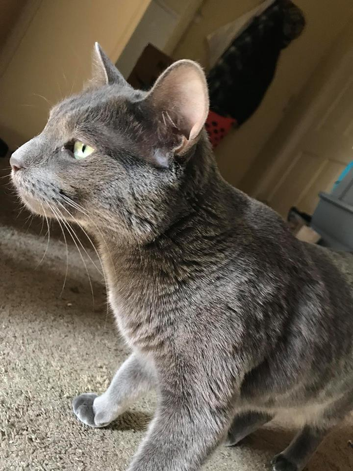
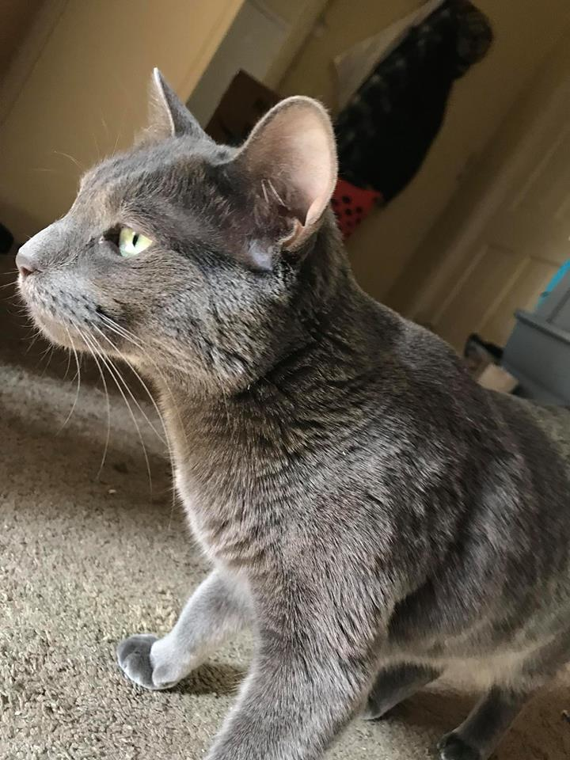
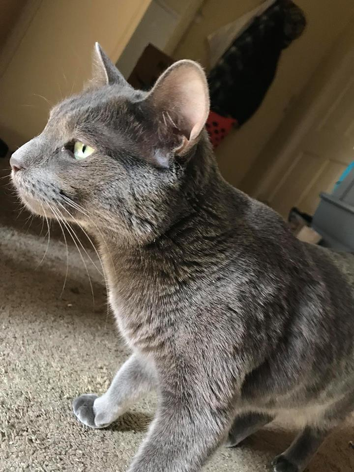
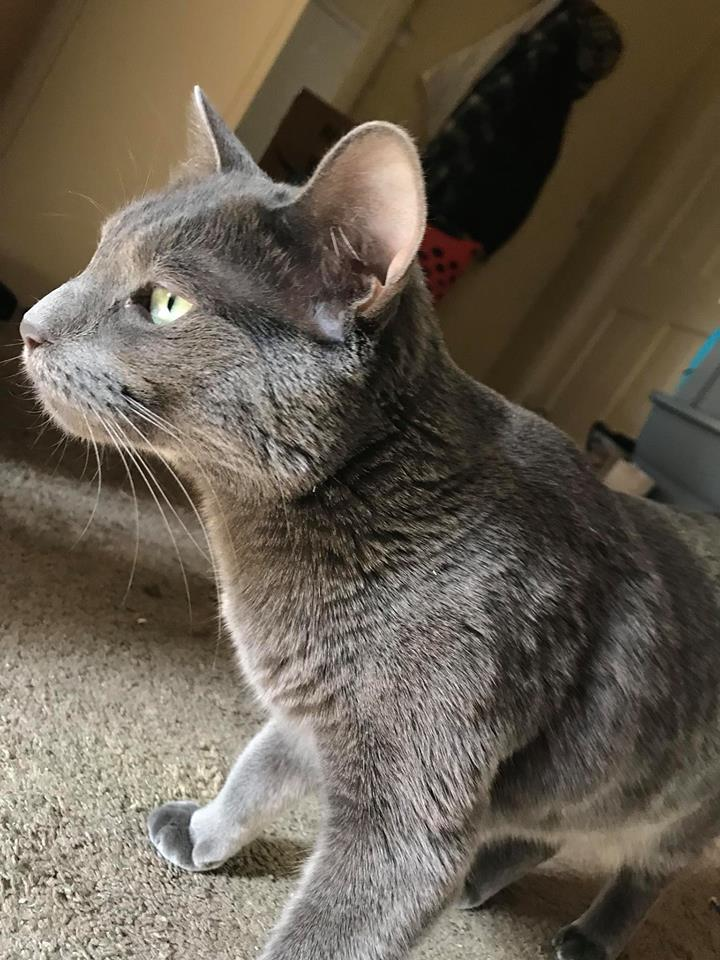

 

Sylvie is a Siamese/Bengal mix, which means she’s hypoallergenic! It also means she can be bossy and climbs everything. She’s been found on the bookshelf, the counter, even the top of the fridge. She’s a very clean cat, spending hours a day grooming herself. She expects the best, whether it be soft food or getting scritches. When she wants attention, she demands it, dragging toys over to her owners.
This cat loves to play fetch! Her favorite toy to play with is hair ties, and she’s frequently seen with them hanging out of her mouth as she begs you to throw them. She brings them back, too… usually.
Sylvie’s full name is Sylvie Anne Stormy “the Kit Kit” Bathsheba Ashen Weasel Rowell-Jore. She only gets called that when she’s in big trouble, or if her owners are presenting her to guests. She normally just goes by Kit Kit or Sylvie.
Her fur is soft and gleams like silver in the daylight. Her eyes are a blue-green with large black pupils and her ears are points and triangular. Sylvie has an assortment of outfits she wears for photoshoots or sweaters for when she’s cold in the wintertime, and she tolerates these fairly well.
Sylvie is kind of an asshole. She doesn’t like much affection, and definitely isn’t a lap cat. She screams for food and runs around your feet when you go to get it. She generally sits just out of arm’s reach and is unwilling to come in for cuddles. However, her owners love her and she is The Most Perfect Cat™. Sylvie is a gorgeous, feisty beast and deserves the respect she demands.